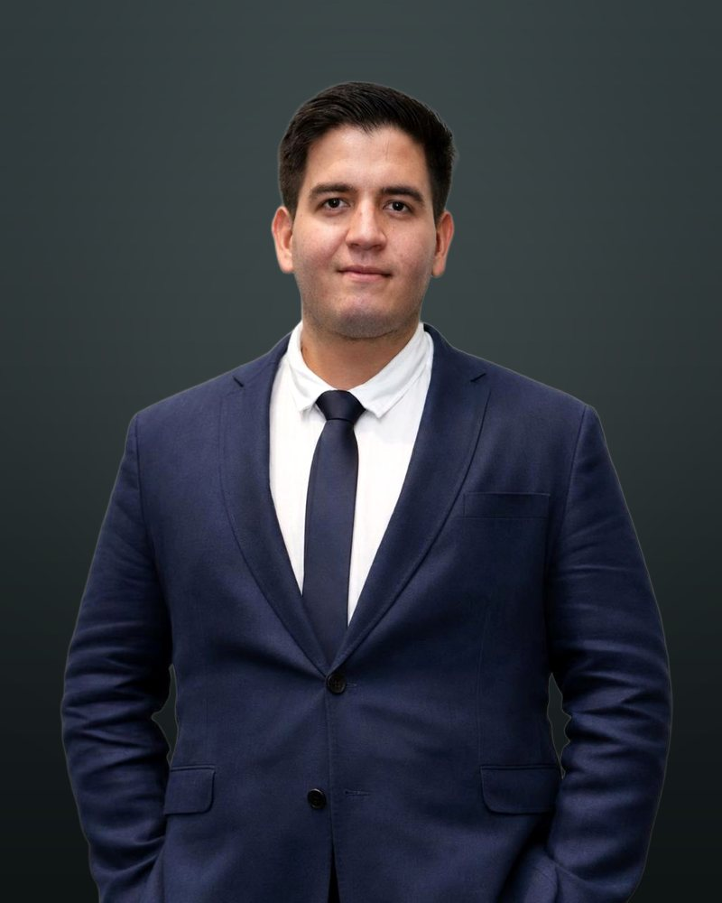

Siempre he trabajado entre la operación y el número. Hoy, además, construyo las herramientas.
Me formé como ingeniero industrial y aprendí a leer una operación minera desde sus personas y desde sus cifras. Esa doble lectura es la que llevo a cada proyecto.
Hoy
CEO, Sunqu Consultoría
Formación
Ingeniería Industrial, UTEC (quinto superior)
Posgrado
Agentes IA, UTEC 2025
Base
Lima, Perú
De dónde vengo
Lectura socialLectura técnica
Lectura socialSoporte a la PMO de RR.HH. multipaís, con objetivos alineados al negocio.
Minsur
Compensation & Benefits · Nov 2021 – Nov 2022
Lectura técnicaDespliegue de Workplace a 350 usuarios y desarrollo de RPA.
Lectura socialLa mina y la concentradora, entendidas desde lo que mueve su operación.
Antamina
Finance & Costs · Dic 2022 – Jun 2023
Lectura técnicaKPIs, EBITDA y planeamiento a 5 años de combustible, explosivos y consumibles críticos.
Lectura socialUn equipo multidisciplinario de 14 personas, del kick-off a la aceptación formal.
STRACON Tech
Agile Project Manager · Feb 2024 – Ene 2025
Lectura técnicaPortafolio IoT de USD 3.6M para Antamina, Anglo American y Collahuasi.
Lectura socialEl ciclo comercial completo, de la preventa al customer success.
Enbo
Project Manager · Ene 2025 – Actualidad
Lectura técnicaTransformación digital y un equipo de producto: UX, desarrollo y QA.
Lectura socialPrevenimos conflictos sociales para que la operación de nuestros clientes no se detenga.
Sunqu Consultoría
CEO · Actualidad
Lectura técnica16+ proyectos concurrentes y una operación AI-native.
Sunqu Consultoría CEO
Gestión social y prevención de conflictos para minería, energía e infraestructura.
“Prevenimos conflictos sociales para que tus operaciones no se detengan.”
SunquSensorMemoria de la gestión social: actores, reportes y acuerdos.
Observaciones SSOMA en obra. El supervisor reporta con foto, la app cita la norma peruana incumplida (Ley 29783, G.050) y el contratista registra el levantamiento con evidencia. Multi-obra, US$ 100 por obra al mes.
Recupero de subsidios por descanso médico ante EsSalud, como servicio gestionado o como plataforma. Calcula el monto para el PLAME, avisa antes de que un caso prescriba y muestra cuánto se recuperó y cuánto se perdió.
IA aplicada a la operación diaria de una empresa de servicios, sin equipo de tecnología. Cada propuesta pasa por una cadena de agentes que empieza en el brief, donde estaba el cuello de botella real.
Bot entrevistadorUn bot de Telegram (Claude API + SQLite) convierte la entrevista en un brief estructurado.
Estratega de propuestasArma la propuesta técnica y el plan de trabajo.
Breakdown de recursosConvierte el alcance en el desglose y el Excel de presupuesto.
Propuesta económicaEntrega el documento listo para el cliente.
Una propuesta técnico-comercial pasó de 3 días a 1.
Además, Sunqu Research: una app interna que corre búsquedas en paralelo con Perplexity y sintetiza un brief con Claude en 60 a 90 segundos, sin tocar código.
Resultados
3×
el valor del contrato original, vendiendo alcance después de la adjudicación
USD 3.6M
en portafolio IoT para minería enterprise
3d → 1d
para armar una propuesta técnico-comercial con agentes de IA
16+
proyectos concurrentes en 6 cuentas de minería y energía
95%
de NPS en Plaza Quellaveco: ~3,000 asistentes y roll-out en 6 sedes para Anglo American
32
personas lideradas en campo
S/ 3M
de presupuesto gestionado
Empresas con las que he trabajado



Conversemos
Si quieres saber qué hace Sunqu, entra a sunquconsultoria.com. Si quieres hablar conmigo, aquí me encuentras.